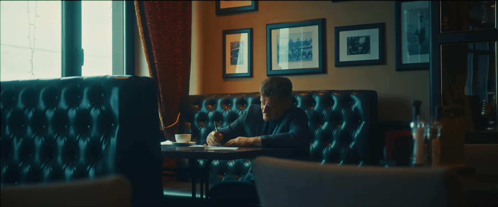

Почему видео из камеры блёклое: log-профильСерая картинка — это негатив
Вы сняли на «настоящую камеру», открыли файл — а там серая, плоская, безжизненная картинка. Это не брак. Это log-профиль, и он так выглядит нарочно. В этом уроке — почему, и как «проявить» его своими руками, прямо здесь.

Короткий ответ: камера в log-профиле нарочно записывает плоскую малоконтрастную картинку, чтобы уместить в файл весь диапазон яркостей сцены — от глубоких теней до яркого неба. Это цифровой аналог негатива плёнки: негатив тоже выглядит странно, пока его не проявили. Проявка здесь — цветокоррекция.
Зачем камера портит картинку
Сцена перед камерой почти всегда контрастнее, чем то, что умеет честно хранить видеофайл. Солнце в окне и лицо в тени — это огромный разброс яркостей. Если писать «как есть», что-то придётся отрезать: либо тени провалятся в чёрное, либо небо выгорит в белое.
Сжатый, но полный диапазон — это свобода на посте: тени можно поднять, света притушить, и информация для этого в файле есть. В контрастной «красивой» записи её бы уже не было.
Проявите кадр сами
Проявка log — это в первую очередь возврат контраста и насыщенности. Ниже — кадр в log-виде и два ползунка. Задача: сделать картинку живой. Подсказка: обеим ручкам почти наверняка захочется вправо от середины.

В настоящем Resolve эту работу делает не пара ползунков, а конверсия цветового пространства: нода CST (Color Space Transform) или официальный технический LUT производителя камеры. Она математически точно переводит log в дисплейное пространство Rec.709 — и только после неё начинается творчество:
Главная ошибка: LUT поверх log
Скачали «киношный LUT», накинули на серый исходник — и всё стало кислотным: цвета ядовитые, кожа оранжевая, тени грязные. Причина простая: творческие LUT рассчитаны на нормальный контраст на входе, а вы подали им сырой log. Сначала конверсия — потом чужие пресеты.

И про телефон, раз уж он всегда с собой. Обычный режим смартфона отдаёт уже обработанную картинку — телефонный «грейд» запечён в файл. Крутить её можно, но запас маленький: где log прощает две ступени экспозиции, телефонный файл сыпется в шумы и полосы. Поэтому клиентские ролики снимают в log и проявляют руками — а телефону оставляют то, что телефону: как выжать из него максимум, есть в гайде «Как снимать видео на телефон».
Что запомнить
- Блёклое видео из камеры — норма. Log-профиль нарочно жертвует контрастом, чтобы сохранить весь диапазон сцены
- Log — негатив, грейд — проявка. Файл обязан пройти конверсию в Rec.709: нода CST или технический LUT камеры
- Творческий LUT — только после конверсии. Поверх сырого log он даёт «кислоту»
- Телефон пишет уже готовое. Запас на кручение меньше — тянуть телефонный файл, как log, нельзя
Дальше по серии: базовая коррекция по шагам — в уроке «Порядок цветокоррекции: четыре шага». Хотите пройти путь целиком с бесплатным Resolve — гайд «Цветокоррекция видео: как сделать самому». Если проявлять некогда и нужен результат — сколько стоит цветокоррекция у колориста.
Частые вопросы
Почему видео с камеры отображается как негатив?
Если картинка серая, плоская и будто выцветшая — это не негатив, а log-профиль, и до проявки он таким и должен быть. Проверить просто: на waveform трасса log-материала жмётся к середине, серая карта в S-Log3 садится примерно на 41 IRE. А если тёмное действительно стало светлым и наоборот — это уже инверсия: ищите включённый эффект Invert на клипе или неверно прочитанный диапазон при импорте.
Что такое log-профиль в фотоаппарате?
То же самое, что в кинокамере. В видеорежиме современные беззеркалки пишут логарифмическую гамму: у Sony это S-Log3, у Canon — C-Log, у Panasonic — V-Log, у Nikon — N-Log, у Fujifilm — F-Log. Смысл в запасе: обычная гамма Rec.709 держит над средне-серым всего около 2,5 стопа и дальше выжигает свет, а S-Log3 — примерно 7,7. Эти пять лишних стопов и есть причина, по которой терпят серую картинку в мониторе.
Есть ли log-профиль в смартфоне?
Есть, но не у всех и не в обычном режиме съёмки. У iPhone это Apple Log в Pro-моделях начиная с 15 Pro: Настройки → Камера → Форматы → Apple ProRes, а внутри ProRes Encoding → Log. Обычный режим отдаёт уже обработанный файл с запечённым телефонным грейдом, и запаса на кручение там почти нет. Только не обольщайтесь: log не расширяет динамический диапазон самой матрицы, он лишь бережнее укладывает то, что она успела снять.
Как проявить JPEG, снятый в S-Log?
Сначала неприятное: профиль изображения применяется и к фотографиям, поэтому log-кривая запеклась прямо в JPEG. Файл восьмибитный, и часть уровней кривая уже потратила на тени — при возврате контраста в небе и на щеках быстро полезут полосы. Тянуть можно: контраст, насыщенность, немного тепла в баланс, но без экстрима. На будущее решение одно — снимать фото в RAW: там баланс белого и ISO лежат метаданными и меняются без потерь, а log их уже запёк.
Как проявить log в Final Cut Pro?
Порядок тот же, что в Resolve: сперва техническая конверсия, потом творчество. В Final Cut она делается не эффектом, а свойством клипа — выделите клип, откройте инспектор «Информация», переключите вид метаданных на «Настройки» и выберите нужный пункт в меню Camera LUT: Apple Log, ARRI Log C и другие встроенные. Учтите, выбор применится ко всем копиям этого клипа во всех проектах библиотеки. И только после конверсии — цвет и look: творческий LUT поверх сырого log даст ту же кислоту, что и в Resolve.